| We started the month of April on the road,
making an early move from Oklahoma to Montana. Because of Covid-19,
the oil and gas industry was slow, so Eric was anxious to be somewhere
that he could stay active. We had no idea at the time that this
would be our last family migration, as we have since sold our OKC home and
are now permanent residents of Montana. Big changes! |
|
| Montana Migration | |
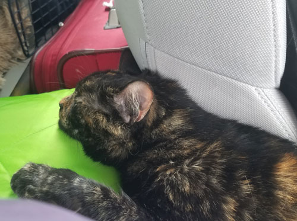 |
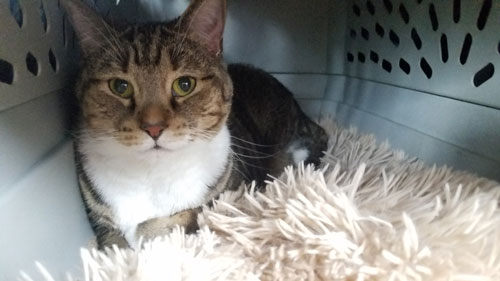 |
| Three days of being stuck in the car all day will suck the life out of
anyone. The cats give up on the will to live about half-way through the first day. |
Lily almost never comes out of her box, even though the door is open all day. |
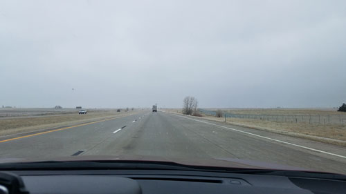 |
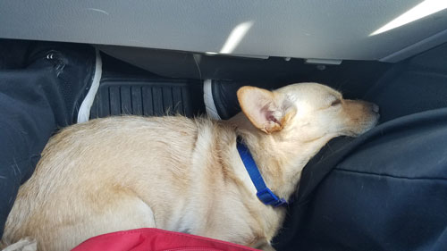 |
| Kansas seems to go on for years. | Buddy, in the floor board, is "over lith it" as the Morton family likes to say. |
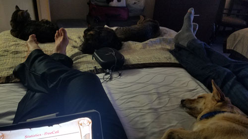 The entire family on one bed in the hotel. The "frienemies" don't have the energy to bicker tonight! |
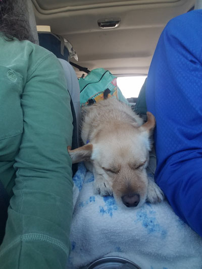 |
| Trying to get comfortable on the armrest - because he's tried all the other places. | |
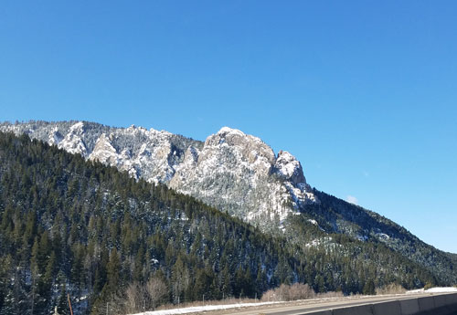 |
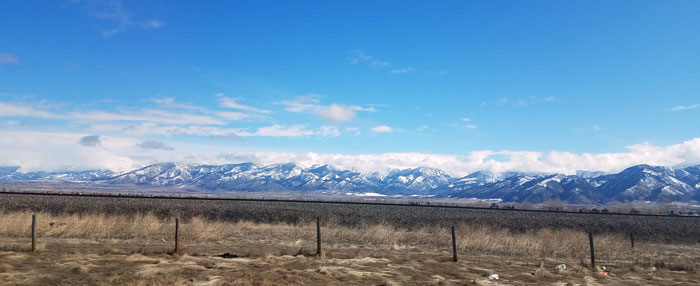 |
| The scenery is mostly lame until you get to Montana. Day 3 is all Montana and mostly beautiful. | Mission Mountains |
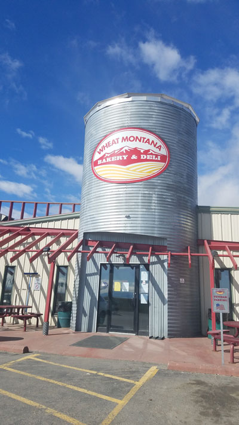 |
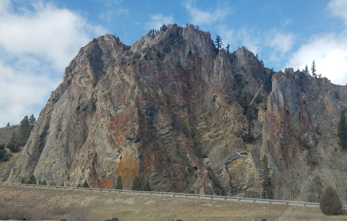 |
| I love Wheat Montana bread, even though I try not to eat bread, it's worth a cheat! | |
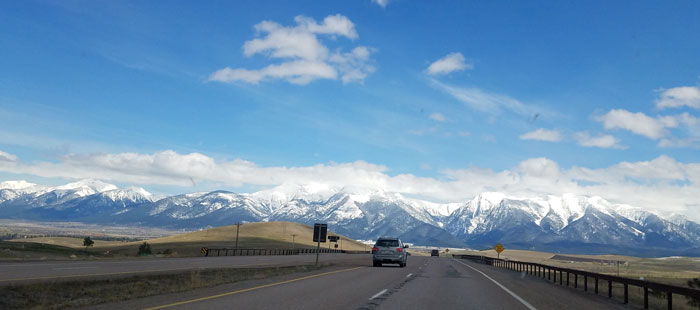 |
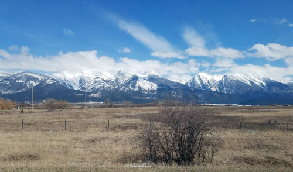 |
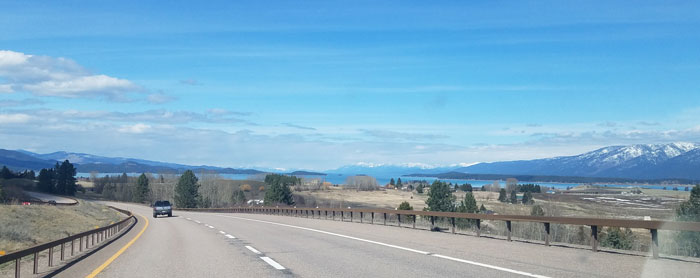 A first look at Flathead Lake, a huge and beautiful lake. |
|
|
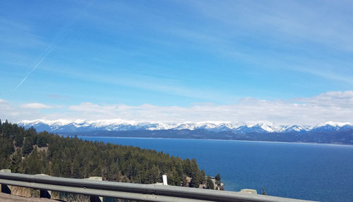 |
More of Flathead Lake |
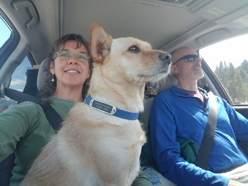 |
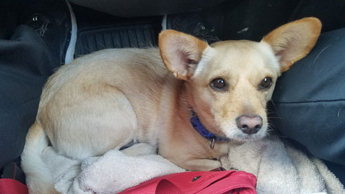 That final stretch feels like it will never end! |
| Almost to Kalispell! | |
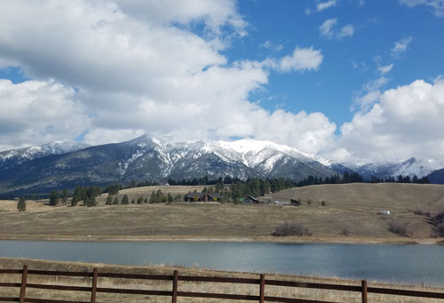 Home at last! |
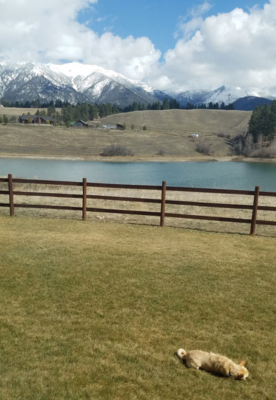 |
| Buddy settled in immediately, loving being back to freedom from leashes and fences. | |
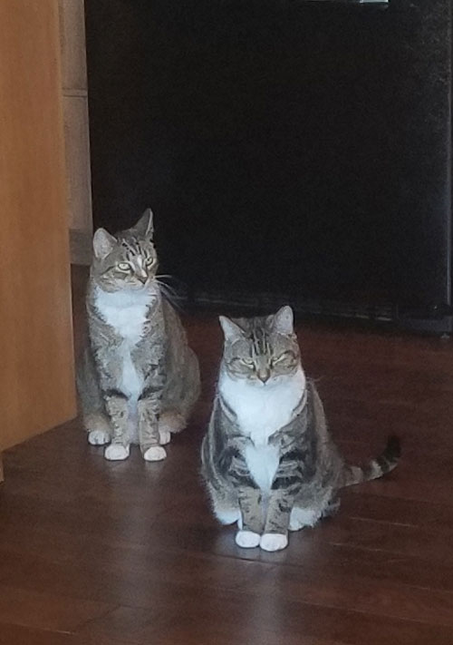 |
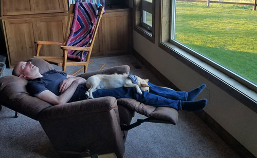 My boys, collapsed into a serious nap. |
| The gray cats are happy to be back too, you'll have to take my word for it. | |
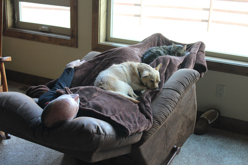 |
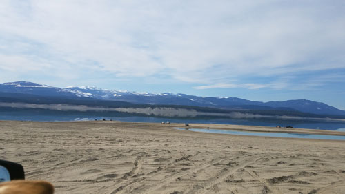 |
| Rocket being stubborn and refusing to give ground to Buddy. | Venturing out to Lake Koocanusa before the water level had started rising for the summer. |
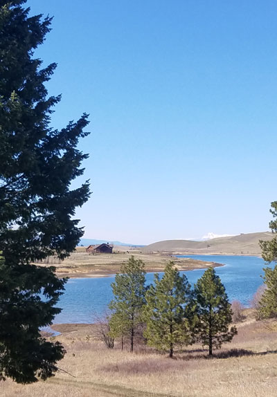 |
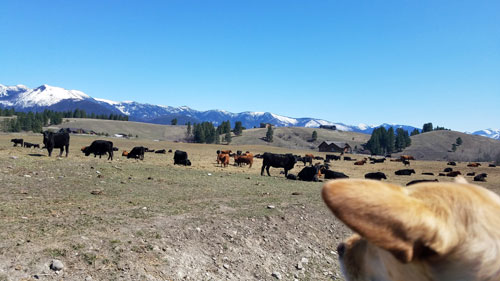 Buddy eyeballing Monte Benedict's cows who were living at our place at the time. |
| Looking at our house from the end of our daily walk. | |
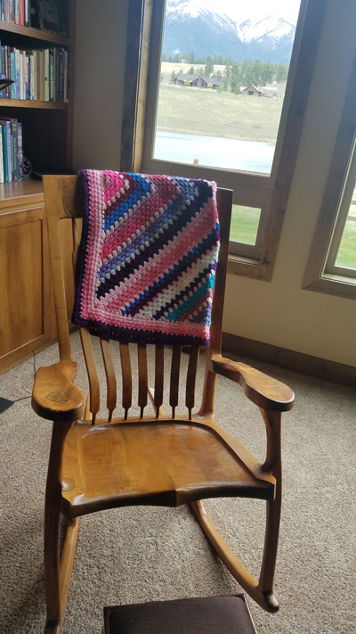 |
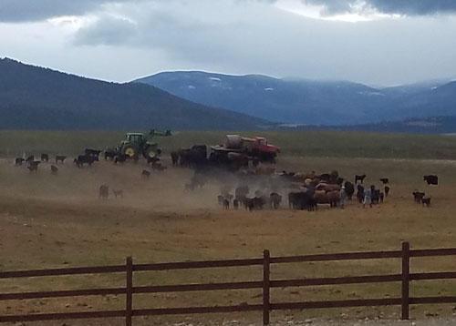 Monte lost his hand for a couple of weeks so Eric volunteered to help feed the cows for a while. |
| Mom's good friend Levita made this lap blanket out of Gran's old yarn for
me, and a similar one for Desirae. I thought it was a very sweet thing for her to do. |
|
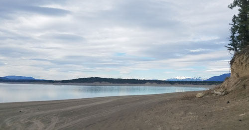 Another visit to Lake Koocanusa. The water level eventually got
so high that you could |
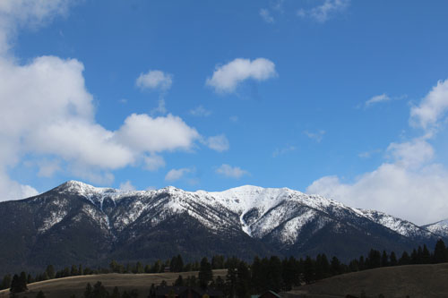 |
| The mountains look lovely in snow. I like it best when the snow stays up high! | |